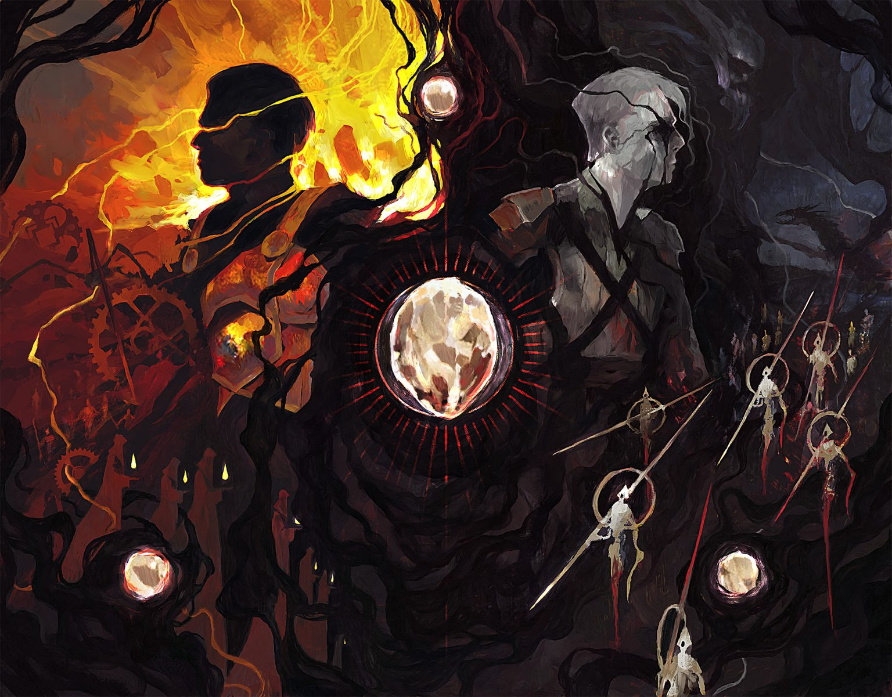
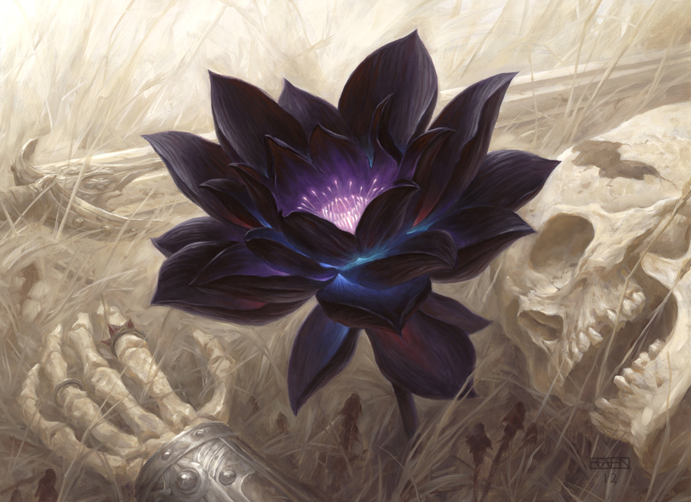

Here is some information about the different ways you can play Magic: The Gathering. Use the table of contents to quickly navigate to the part you need.
Standard
Standard is the format which uses only the most recent cards printed (usually from the last year). This also means that every year, the cards legal in standard rotate. In standard (and modern, legacy, and vintage), players construct 60 (minimum) card decks with a 15 card sideboard that face one opponent and a maximum of 4 copies of 1 card. This format is good because the card in it are easily accessable and usually aren't too expensive. However, many players don't like the rotating of standard, resulting in players constantly having to create new decks after cards suddenly become not legal.
Modern

Modern is the format that allows players to build decks with card from the set "Ravnica (2011)" onwards. This means that cards normally not legal in standard are allowed in this set. Modern also has a couple of supplimental sets used to add new cards directly into modern. This format is a good bridge between standard and legacy because the card pool is in between the two sets.
Legacy and Vintage
Legacy and Vintage are the formats that include cards from the entirety of Magic: the Gathering's history. The difference between the two is that vintage allows cards that are deemed too powerful for any other format to be played, the most notable of which are the dreaded "Power 9."Legacy on the other hand, bans several of the more powerful cards legal in vintage. These formats allow for some of the most powerful decks to be made, but those decks come with high price tags, with the average deck costing over $1000!
Commander

The difference between Commander and the other formats mentioned is the way decks are made. In commander, you build a deck with exactly 100 cards in it, and only one copy of any given card, except basic lands. Commander decks also have a Commander that leads the deck. This commander is any legendary creature (or sometimes planeswalker), and every card in the deck must follow your commander's color identity. This means that if your commander is red and blue, you can't have any card that contains a color that isn't red, blue, or colorless (colorless cards can go in any commander deck). Similar to legacy, commander has access to the entire history of MTG at its disposal. This format is also muliplayer, with groups of 4 being the most common number of people in a game of commander. People love commander because it is a casual format and the nature of it means that nearly any strategy can be viable.
Limited
Limited formats are another thing entirely. While constructed decks have you build a deck before hand, limited formats have you make a deck based on a limited pool of cards, forcing you to adapt a strategy on the spot. There are 2 types of limited formats: sealed and deaft. Sealed is a format where you open 6 draft booster pack of MTG cards and build a deck using those cards and basic lands. Draft on the other hand, is a format where each player gets a pack, chooses a card from it, and passes the pack to the next player. Players repeat this until each player has gone through 3 packs of cards. Players then build decks out of their drafted cards (and basic lands of course) and then duel their opponents 1 on 1 with the decks they made. Limited decks only require a minimum of 40 cards instead of 60. Also due to the nature of limited, you can have any number of copies of a card in your deck. Players enjoy this format because they can play with cards from any set they can get packs for, and the experience is new every time.
Conclusion
Overall, there are several different ways to play Magic: the Gathering, and many more not listed here. Wheather you like casual commander, ruthless Vintage, or repeatable drafts, there is probably a way to play MTG for anyone.
Quick Reference Table
| Format | Cards Available | Rotation? | Complexity Rating (1-5) | Cards in deck |
|---|---|---|---|---|
| Standard | Cards from Most recent year | Yes | 2 | 60+ |
| Modern | Cards from Ravnica Set (2011) Onwards | No | 3.5 | 60+ |
| Modern | Cards from all of MTG's history | No | 5 | 60+ |
| Legacy and Vintage | Cards from all of MTG's history | No | 5 | 60+ |
| Commander | Cards from all of MTG's history | No | 4 | 100 |
| Limited | Any One Set | NA | 3 | 40+ |